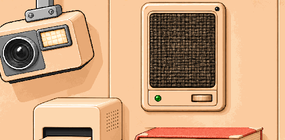
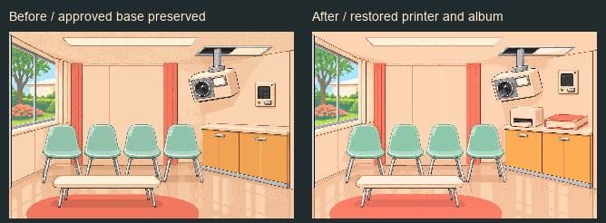
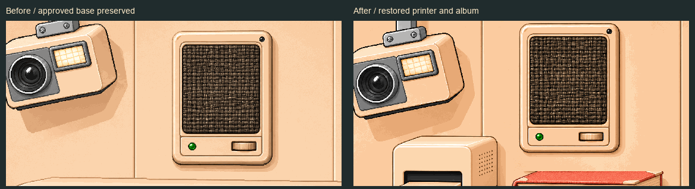
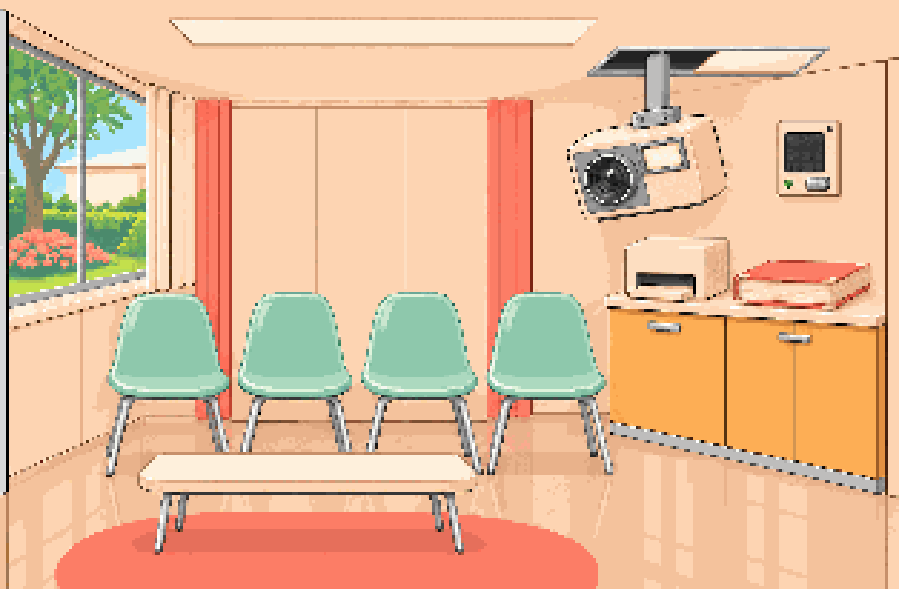
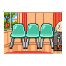
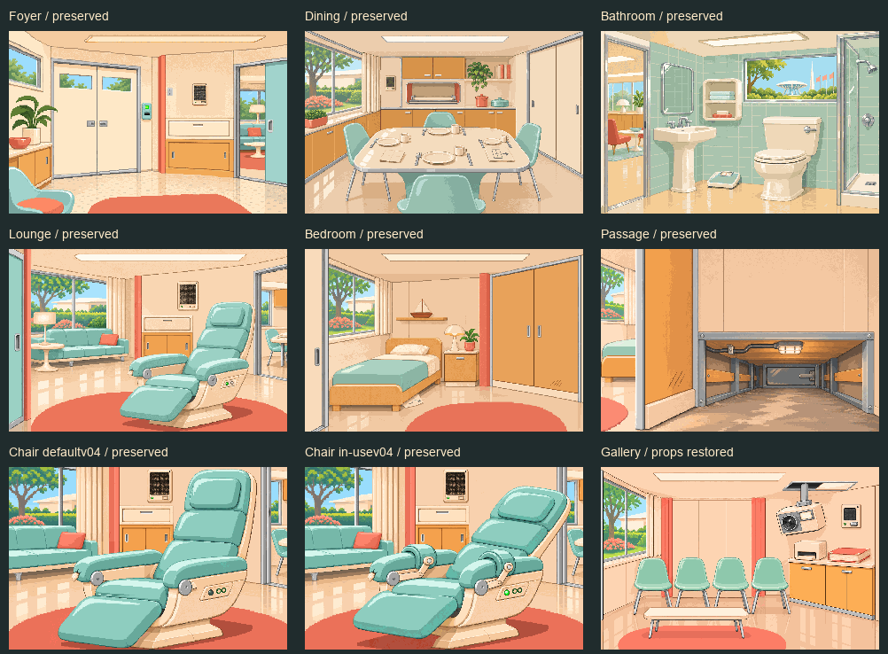

564×278 · RGB · generated / approval pending
Current seven-candidate Chapter1 Batch3 review. Only A/B are new. The owner-approved chair row, short ceiling camera/hatch, room and intercom model are retained; a cream photograph printer and oversized closed coral album return to the counter. The wall intercom is raised to leave clear wall above the album in both views.
Private branch agent/ch01-art-batch03-20261115 · baseline 0408259318c529e96312fc1b4b4b206fec9ad42c. Final remote-verified commit SHA is reported in the owner handoff.
Restoration notes · Built-in imagegen prompts · Current selected assets/hashes · QA · Previous review snapshot
314×206 · RGB · generated / approval pending

564×278 · RGB · generated / approval pending



Download native scene/portrait comparison
Same simple pixel figures and wide photographic look. Final two frames keep their sideways misalignment. No taking camera appears inside photographs; the album stays closed in the main room to preserve these discoveries.
564×278 · RGB · generated / approval pending

564×278 · RGB · generated / approval pending

564×278 · RGB · generated / approval pending
Three whole empty chairs and a cropped seated adult at the fourth; shoes face the camera, head/face outside print.

96×96 · RGBA · generated / approval pending

565×451 · RGB · generated / approval pending

Earlier artwork versions, all other House rooms, the approved intercom and previous framing corrections are preserved. No story JSON, gameplay, engine, production art or public Art Lab changes.